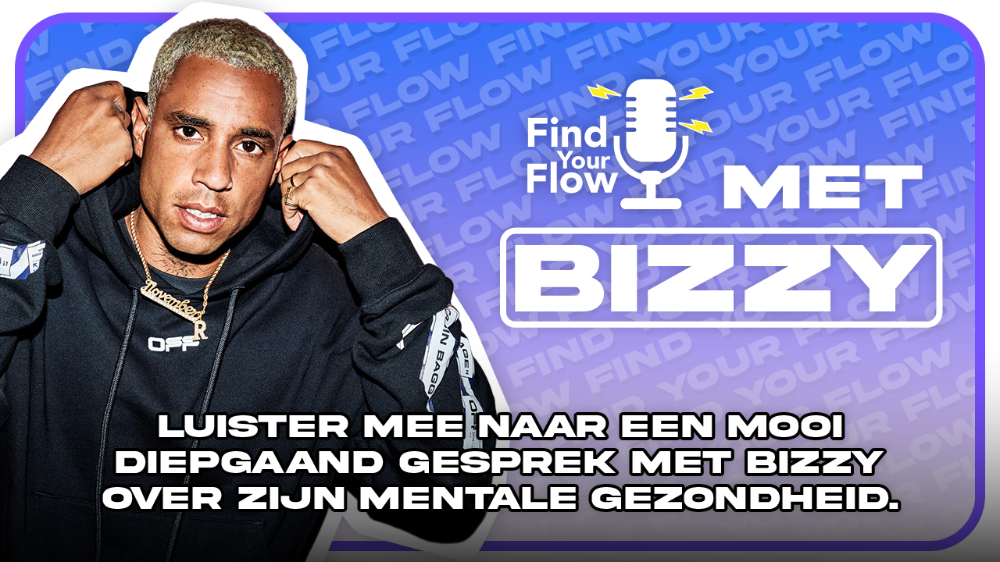
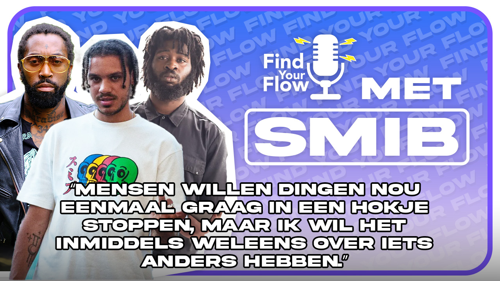
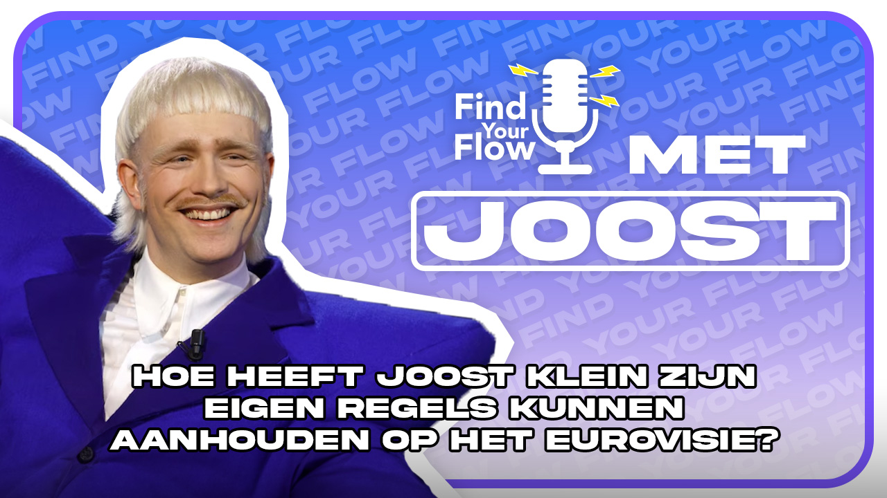

Welkom
Wie zijn wij?
Hey, wij zijn Fernando en Ouassima aka de wekelijkse vaste stemmen in Find your flow de podcast. Wij zijn op een zoektocht naar wat artiesten hebben gedaan om te slagen in deze moeilijke industrie. Hier nemen we jullie in mee door wekelijks vragen te stellen aan de artiesten om erachter te komen wat zij hebben gedaan, om te staan waar ze nu staan en wat het hun gaandeweg heeft opgeleverd.
Van krantenwijk naar Miljonair
Hier vind je onze meest recente afleveringen, de meest nieuwste aflevering met rapper Boef staat nu online
In 2015 begint de carrière van Boef. Binnen een jaar mag hij zichzelf al een van de populairste rappers van Nederland noemen. Hij heeft veel invloed heeft op jongeren en in zijn carrière heeft hij veel obstakels moeten overkomen. In maart 2017 komt het debuutalbum van Boef uit genaamd Slaaptekort. Binnen twee maanden is het album platina, met 'Habiba' als grootste hit

Klik hier om alle afleveringen te zien!
-
Aflevering 1

Roxy Dekker: De beste nieuwkomer van het festivalseizoen
-
Aflevering 2
Bizzey: De schaduw kanten van succes en het belang van mentale gezondheid.
-
Aflevering 3
SMIB: De crew die de Nederlandse HipHop scene een nieuwe richting geeft
-
Aflevering 4
Hoe heeft Joost klein zijn eigen regels kunnen aanhouden op het Eurovisie, kom meer te weten in de podcast.
-
Aflevering 5

Froukje en S10: De kracht van vriendschap in de muziek
-
Aflevering 6

Miljonair van de straat: Boef over zijn succes en strijd